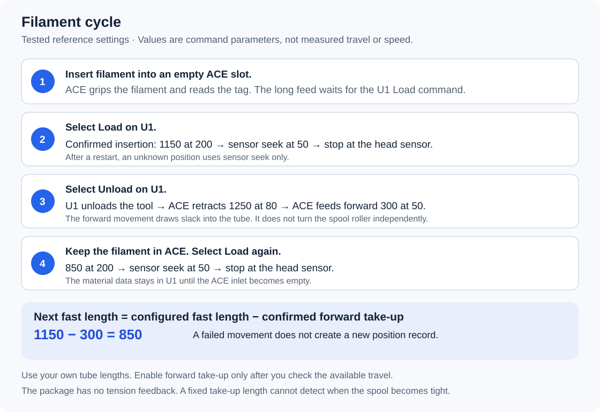

No programming knowledge is required.
Double-click START-HERE.cmd. Select 2. English. The wizard can start with U1 firmware preparation.
This is the offline guide. It does not start installation when opened.
Built with OpenAI Codex. Installation does not require Codex or an API key.
External detection is automatic. The installer saves backups, sets External, and verifies the internal-reader service state.
Start here
You do not need programming knowledge, Codex, or an API key.
Use a Windows 10 or Windows 11 computer on the printer's network.
The guided launcher offers English and 中文 at startup.
The manual source procedure remains available if you prefer to inspect and enter each command.
It skips the Windows launcher but still runs the open-source printer installer.
The previous package remains available unchanged.
Prepare the machine
The same wizard now includes U1 firmware preparation.
Select that path if the required firmware is not already installed.
It downloads and verifies the original 2.0.0-paxx12-24 file, then copies it to your selected FAT32 USB drive.
- Follow the wizard's screen instructions to install the prepared file on U1.
- Enable Advanced Mode on the U1 screen and complete the requested restart.
- Set Root Access to Open on the screen.
- Connect the ACE Pro Gen 1 and its four PTFE paths.
- Confirm the required ACE firmware before NFC use.
- Finish the current print.
- Let the nozzle and bed cool.
The tested ACE firmware is CV1.3.863 with OpenCubic 1.1.1.
See prerequisite instructions.
The launcher prepares the U1 file and guides the physical steps. The printer performs the update after your screen confirmation.
It does not flash ACE or change hardware.
First installation: empty all four ACE inlets and all four U1 heads before installation.
Existing installation: an update does not require all four channels to be emptied.
Install with the launcher
- Download the project ZIP.
- Right-click the ZIP in your Downloads folder.
- Select Extract All.
- Open the extracted
Ultimate-U1-ACE-linkfolder. - Double-click
START-HERE.cmd. - Select 2. English.
- Complete U1 preparation, or select the already-prepared path. Enter the current printer address.
- Review the installation summary.
- Confirm installation when the machine is idle and cold.
- Wait for the success result.
Do not run the launcher from inside the ZIP viewer.

Password entry shows no characters or asterisks.
The launcher does not save passwords.
Open START-HERE.en.html for this guide without an internet connection.
Use START-HERE.html for the Chinese guide.
What the installer sets
| Item | Automatic action |
|---|---|
| U1 firmware preparation | Download and verify v24, then copy it to selected FAT32 USB. Screen approval remains manual. |
| File transfer | Copy the required public files to a new staging directory. |
| Existing parameters | Keep the current ACE settings. |
| ACE interface | Use the existing interface or identify one matching device. |
| Filament Detection | Set External and disable the internal reader path. |
| Persistence | Create the required debug marker when missing. |
| Configuration | Add the ACE and save-variable settings as needed. |
| Recovery | Save the original files before changes. |
| Completion | Restart services and verify the active settings. |
The setting name is External.
The word extended describes the firmware and its configuration files.
You do not need to select External manually before guided installation.
Values that depend on your machine
The first installation asks for reviewed fast-feed and retract distances.
Existing installations keep their current settings.

| Letter in the launcher | Meaning |
|---|---|
| A | Retract from the head while keeping the tip inside ACE and its rear tube. |
| B | Feed quickly from the known starting position, stopping before the head. Use a value smaller than A. |
The tested distances are 1150 mm for fast feed and 1250 mm for retraction.
These distances are examples for one tube arrangement.
Use the calibration guide for a different arrangement.
Common speed defaults are 200 for fast feed, 50 for the final approach, and 80 for retraction.
Forward take-up is disabled on a new installation.
Enable it only after the initial load and unload check.
Check one slot
- Insert filament into one empty ACE inlet.
- Wait for the short bite and NFC recognition.
- Confirm that automatic full loading does not start.
- Select Load on the U1.
- Wait for load completion.
- Select Unload.
- Confirm that material data remains available.
- Select Load again without removing the filament.
Keep your hands away from the rollers.
The installer does not run this physical test.
If the launcher stops
| Message or situation | Next action |
|---|---|
| No characters appear during password entry | Type the password, then press Enter. Hidden input is normal. |
| Upload failed before installation | Check the current address, Root Access, password, and network. |
| The machine is busy or hot | End the task and dryer operation. Set heater targets to zero. Wait for temperatures below 50°C. |
| ACE feed assist is still active | Use the U1 screen to unload that channel normally, then wait for cooling. |
| No unique ACE interface | Check power and the correct USB connection. Connect only one ACE. |
| Installation started but success was not confirmed | Keep the window and diagnostic file. Do not repeat installation or start printing. |
The launcher never automatically repeats installation after a lost connection.
It shows the private diagnostic file and printer staging directory.
See recovery instructions before further changes.
Successful automatic recovery records Automatic rollback VERIFIED in the diagnostic output.
A failed recovery records automatic rollback FAILED and a backup identifier.
Remove private details before sharing diagnostics. Do not publish NFC keys or printer backups.
Missing Windows OpenSSH client
- Select Start in Windows.
- Search for Optional Features.
- Open the matching settings page.
- Select View features or Add a feature.
- Search for OpenSSH.
- Select OpenSSH Client.
- Complete installation with the displayed buttons.
- Start the launcher again.
The client is required. The server is not required.
Your administrator can add the component if the computer is managed.
See Microsoft's component instructions.
Development
This project was built with OpenAI Codex.
The user supplied requirements, observed the machine, and performed physical tests.
Codex wrote and integrated the code, installer, and documentation.
Upstream contributions and licenses remain listed in THIRD_PARTY.md.
U1 firmware and access setup
Prepare U1 firmware in the guided workflow
简体中文 · Guided installation · Manual source installation
The preparation stage handles the U1 firmware file and shows the required screen actions.
It uses the original upstream file, not a new combined firmware image.
It does not flash ACE.
What you need
- A Windows 10 or Windows 11 computer with internet access.
- A removable USB drive that already uses FAT32, with at least 300 MB free.
- The extracted project package.
- An idle U1. Save any existing custom configuration privately before a firmware update.
The host installer's later backup does not protect changes from an earlier firmware update.
If you already have the exact supported firmware, choose the existing-preparation path instead.
Do not replace a customized or newer firmware merely to pass an installation check.
Guided steps
- Extract the complete project ZIP.
- Double-click START-HERE.cmd.
- Select English or 中文.
- Select the U1 firmware preparation path.
- Insert your FAT32 USB drive into the computer.
- Select its drive from the displayed list. Check its letter, label, and capacity.
- Confirm that destination.
- Wait for download, SHA-256 verification, file copy, and destination verification.
- Use Windows Eject after the copy has finished.
- Insert the drive into U1.
- Select Settings → About → Firmware Version → Local Update on the U1 screen.
- Select
U1_extended_2.0.0-paxx12-24_upgrade.bin. Confirm the update. - Wait for the update and restart to finish. Keep power connected.
- Open Settings → Maintenance → Advanced Mode. Enable it and complete the requested restart.
- Open Settings → Maintenance → Root Access. Read the notice, scroll to Agree, and select Open.
- Check Wi-Fi. Reconnect if necessary. Read the current printer IP address.
- Continue in the same computer wizard when these checks are complete.
The next stage asks for the printer address, SSH password, and reviewed tube distances.
It then runs the existing compatibility, backup, installation, and verification procedure.
The firmware preparation stage does not contact or move the printer.
What the preparation stage will not change
It does not format disks, use a fixed internal disk, or overwrite a different file with the same name.
It copies only the verified firmware file to the selected USB root.
Other USB files stay in place.
If a conflicting file exists, inspect it yourself before another attempt.
If no suitable drive appears, use a FAT32 removable drive; do not change the program to force another disk.
The download is cached under the Windows user's Local AppData project folder.
A complete matching file can be reused. A partial or incorrect download is not offered for installation.
No downloaded script is executed.
Exact firmware identity
| Field | Required value |
|---|---|
| Upstream release | v2.0.0-paxx12-24 |
| Filename | U1_extended_2.0.0-paxx12-24_upgrade.bin |
| Size | 253893376 bytes |
| SHA-256 | 42dcf59e06ef0f6fab20745883322f24ddd3c1a09da07449b356dd9dab943070 |
Upstream release and checksum · Exact upstream download
The checksum identifies the upstream asset; it is not a Snapmaker signature.
The project archive contains no U1 firmware binary.
Manual alternative
You can download that exact file from the release page yourself.
Check its SHA-256, copy it to the FAT32 USB root, then perform screen steps 11–16 above.
Continue with manual source installation if you do not want to run the wizard.
The full Chinese machine preparation guide includes file-explorer and USB instructions.
Why not enable everything inside a new firmware image?
An image containing this project and changed startup defaults would be a different firmware build.
It would need its own identity, source obligations, recovery checks, and hardware validation.
It would still need the first screen-confirmed update.
This release instead retains the exact tested upstream baseline and automates its preparation.
Sources: v24 installation, Advanced Mode requirement, and SSH access.
Tube lengths and take-up settings
Configuration and calibration
Tube length affects the settings. It is not the same as a transport command length.
Use three separate values:
| Letter | JSON setting | Function | Reference only |
|---|---|---|---|
| A | retract_length | Main ACE return distance, after the U1 releases filament from the hotend. | 1250 mm at speed 80 |
| B | fast_load_length | Base fast segment. Leave room for the slow approach to the head. | 1150 mm at speed 200 |
| C | forward_takeup_length | Forward movement after A, to draw loose filament into the PTFE tube. | Start at 0; tested reference 300 mm at speed 50 |
All four slots share A, B, C, and the speed settings.
This version has no separate length setting for each slot.
Check all four paths before you accept a common setting.
Distances use millimeters (mm). Speeds are protocol requests in millimeters per second (mm/s).
They are not measurements of actual motor or filament speed.
Settings files
The guided launcher asks for A and B during a first installation.
It starts with C disabled and uses the reference speeds below.
For an existing installation, the launcher keeps the current settings.
Running the launcher again does not apply new A, B, or C values.
Use Apply changed settings for an intentional change.
| File | Use |
|---|---|
config/settings.example.json | Conservative template. C is 0. Existing settings are preserved. |
config/settings.tested-reference.json | Tested reference. C is 300. It requests replacement of existing settings. |
config/settings.local.json | Your working file for the manual procedure below. |
Both templates have calibrated_acknowledged: false.
Review your physical lengths and speeds before changing it to true.
The acknowledgement does not measure or test your tubes.
| Setting | Reference value | Meaning |
|---|---|---|
serial | Your ACE USB path | Preserves an existing choice or identifies one matching ACE. |
auto_detect_serial | true by default | Automatic selection requires one matching device. |
baud | 115200 | Serial connection speed. Keep this value. |
feed_speed | 200 | Default speed for direct ACE_FEED, not the staged-load speed setting. |
feed_length | 1250 | Retained legacy preload option. Automatic long preload is disabled. This is not B. |
retract_speed | 80 | Main ACE return speed. |
retract_length | 1250 | A: main ACE return distance. |
forward_takeup_length | 0 initially | C: forward take-up distance. Zero disables this movement. |
forward_takeup_speed | 50 | Speed of C when enabled. |
fast_load_length | 1150 | B: fast distance before the recorded advance deduction. |
fast_load_speed | 200 | Fast-stage speed. |
sensor_load_speed | 50 | Final approach speed. |
sensor_load_max_length | 2500 | Total load travel allowance across both stages. A fault limit, not the target. |
max_dryer_temperature | 55 | Dryer ceiling. Keep your existing value during length calibration. |
calibrated_acknowledged | false in templates | Set true after reviewing the physical lengths and speeds. |
apply_existing_settings | false normally | Set true to apply intentional changes to an existing installation. |
ACE_FEED requires its own LENGTH argument. It does not use feed_length as its default length.
For the U1 screen's Load action, change fast_load_length, not feed_length.
For Unload, change retract_length and, if required, forward_takeup_length.
The installer writes ACE options to /home/lava/printer_data/config/extended/klipper/ace.cfg.
It applies staged-load constants to the installed module.
It also configures External detection and the internal-reader service.
Use the installer for parameter changes. Do not edit ace.py yourself.
The installer accepts these relationships:
- C is 0–500 mm, and is smaller than both A and B.
- B does not exceed A, and is smaller than the total load allowance.
- Fast speed does not exceed 200. Slow and take-up speeds do not exceed 50.
These checks reject invalid inputs. They do not prove mechanical suitability.
Keep the 2500 mm fault limit during this procedure. Do not increase it to hide a feed failure.
How the distances interact
Insertion starts the ACE's short bite and NFC recognition.
It does not start long transport to the U1 head.
Select Load on the U1 when you want to load that slot.
With a valid starting-position record, the controller uses:
fast request = max(0, B - recorded forward advance)
slow allowance = 2500 - fast request
The head sensor can stop either stage early.
The slow allowance is a maximum request, not a distance that must be completed.
After detection, the U1 completes its normal extruder loading sequence.
| Starting state | Example fast request | Final approach |
|---|---|---|
| Verified new insertion; B = 1150 | 1150 mm at speed 200 | Speed 50; maximum remaining allowance 1350 mm |
| Successful unload; B = 1150 and C = 300 | 850 mm at speed 200 | Speed 50; maximum remaining allowance 1650 mm |
| Restart, interrupted operation, or uncertain position | No fast stage | Speed 50; total allowance 2500 mm |
Do not enter 850 as B to compensate for C = 300.
Keep B = 1150 in that reference example. The controller subtracts the recorded 300 itself.
Entering B = 850 would produce a 550 mm fast request after that unload.

The picture shows control stages, not tube dimensions.
The recorded advance is a conservative allowance, not a measured tip position.
The controller consumes the starting-position record once. A restart clears it.
A slow first load after installation can therefore be normal.
During Unload, the sequence is:
- The U1 performs its normal hotend release.
- ACE retracts A at speed 80.
- The controller checks the head and ACE inlet states.
- If enabled, ACE feeds C toward the U1 at speed 50.
- The controller confirms completion and records C for the next load.
Filament must remain in the ACE inlet and rear PTFE path, with the U1 head sensor empty.
Material data remains while filament remains in the ACE inlet.
An uncertain completion does not authorize an automatic retry.
Calibrate the PTFE paths
Measure and record all four paths
Measure the installed tube along its bends, not the straight distance between the machines.
The ACE internal path, initial bite, head path, and hotend release also affect transport.
A tape measure does not measure these movements. This project does not measure tube length automatically.
- Finish printing and any filament operation.
- Let the printer cool before inspecting the paths.
- Remove power before disconnecting tubing or hardware.
- Label both ends of each tube with its ACE slot and U1 head.
- Measure each installed PTFE route along its bends.
- Record inaccessible sections as unknown. Do not guess them as zero.
- Record the intended tip position after unloading.
- Reconnect every tube securely before a powered test.
Use a parking point inside the ACE-side PTFE tube.
The tip must not reach the head or leave the ACE inlet after unloading.
A starts after the U1's hotend release, not at one end of the tape measure.
Do not copy the measured tube length directly into A, B, and C.
| Slot / U1 head | Measured PTFE route (mm) | Internal sections or unknowns | Tip position after unload | A / B / C tested | Load → unload → reload result |
|---|---|---|---|---|---|
| ACE 1 → head ___ | ___ | ___ | ___ | ___ / ___ / ___ | ___ |
| ACE 2 → head ___ | ___ | ___ | ___ | ___ / ___ / ___ | ___ |
| ACE 3 → head ___ | ___ | ___ | ___ | ___ / ___ / ___ | ___ |
| ACE 4 → head ___ | ___ | ___ | ___ | ___ / ___ / ___ | ___ |
Use one common set that works on every row.
Check B against the shortest effective path to a head.
It must end before the head, leaving a slow approach.
Check both a new insertion and a reload after unloading.
The reference difference between A = 1250 and B = 1150 is 100 mm.
That difference does not establish a 100 mm physical clearance on your printer.
Do not assume that another layout needs the same margin.
If the four paths have no safe common setting, correct the tube arrangement before proceeding.
Choose and check the first values
Start from recorded, working values for your arrangement, when available.
Measurements help assess clearance. They do not establish an exact A by themselves.
If the path or parking point is unknown, resolve it before entering an unverified long return.
You can exit the first-installation wizard without installing.
- Set C to
0for the initial checks. - Keep fast speed
200, approach speed50, and return speed80. - Choose B short enough to leave a slow approach before the head.
- Choose A to return the tip to the recorded ACE-side parking point.
- Apply the values below, or enter A and B during first installation.
- Test one slot with the U1's normal Load, Unload, and Load actions.
- Wait for each action to finish before selecting the next action.
- Record the final tip position, head state, inlet state, and loose filament.
- Test the other three slots with the same settings.
- Keep the record with your installed settings.
Keep hands away from moving rollers. Inspect the final tip only after motion stops.
Remove power before disconnecting a tube to inspect it.
Use the acceptance checklist to record the full cycle.
What to change after an observation
| Observation | Next action |
|---|---|
| Fast travel reaches the head before a slow approach. | Reduce B. A sensor stop does not prove sufficient fast-stage clearance. |
| The slow approach is long, but loading succeeds. | You can keep B. Increase it only after verifying the remaining clearance on all four paths. |
| After unloading, the tip is too far toward U1; the head is empty and no fault occurred. | Consider a small increase in A, within the measured ACE retention margin. Retest with C = 0. |
| The tip leaves the ACE inlet, or the inlet becomes empty. | Reduce A after correcting the physical state. Do not repeat Unload to recover it. |
| Unload fails, the head still detects filament, or filament slips or jams. | Inspect hotend release and the tube path. Do not increase A blindly. |
| Unload succeeds, but loose loops remain at the spool. | Keep A and B. Evaluate C separately in the next section. |
| A changed B seems unused on the first load after restart. | An unknown position uses the slow stage. Check a reload after a successful unload. |
Change one distance at a time, within the clearance you can verify.
No universal increment or tube-length ratio guarantees a correct result.
After changing or rerouting a tube
- Save the last working settings and four-slot record.
- Measure the changed route and update the record.
- Recheck the shortest path across all four slots.
- Disable C during the new calibration.
- Review A and B before the next load or unload.
- Repeat the four-slot checks.
- Re-enable C only after the new A and B pass.
A change to one tube can invalidate the common B setting.
Do not use old values merely to discover whether a new tube is too short.
Enable forward take-up
C draws loose filament into the PTFE tube after the main return.
It does not independently turn spool rollers. It has no tension-sensor endpoint.
- Confirm successful loading, unloading, and reloading with C =
0. - Inspect the loose filament after unloading.
- Select a limited C for the observed slack and available head clearance.
- Keep
forward_takeup_speedat or below50. - Apply the change and test one normal unload.
- Check that the head remains empty and the ACE inlet remains occupied.
- Check the next load without removing the filament.
- Repeat the checks on all four slots.
The tested C = 300 is not an automatic recommendation for your setup.
See the recorded slot-4 test for its scope.
More C consumes more of the parked distance toward the head.
If slack remains, first confirm that filament moves freely.
Increase C only within verified clearance and the accepted limits.
If filament becomes tight, snags, or reaches the head, stop and reduce or disable C.
Do not increase A merely to compensate for excessive C.
Apply changed settings
This procedure changes an existing installation.
For a first installation, use the guided launcher. It asks for A and B and starts with C = 0.
The procedure exports effective current settings before editing them.
This preserves your serial path, dryer ceiling, and other values.
Do not replace your full settings file with a generic example.
1. Prepare the printer and project folder
- Finish printing and all filament operations.
- Complete the idle preparation.
- Keep heater targets at zero and actual temperatures below 50 °C.
- Stop the ACE dryer and feed assist.
- Open an extracted project version that supports your installed version.
- Enter the folder containing
installer.pyandmanifest.json. - Type
powershellin File Explorer's address bar, then press Enter.
Use the same PowerShell window for every block.
Copy commands inside each block, without the surrounding backticks.
If any command reports an error, stop before the next block.
$ProjectDir = (Get-Location).Path
if (-not (Test-Path -LiteralPath .\installer.py)) { throw "Open the folder containing installer.py first." }
$PrinterAddress = Read-Host "Printer IP from the Wi-Fi page"
$PrinterTarget = "root@$PrinterAddress"
$RemoteDir = "/userdata/ultimate-u1-ace-tuning-" + (Get-Date -Format "yyyyMMdd-HHmmss")
Get-Command ssh, scp
scp -O -r "$ProjectDir" "${PrinterTarget}:$RemoteDir"
if ($LASTEXITCODE -ne 0) { throw "Upload failed. Stop here." }
Enter the root password when requested. SSH does not display password characters.
Verify new host-key prompts with the connection instructions.
2. Export the current settings
The read-only check uses the conservative template to retain current settings. It does not install that template.
These commands preserve any previous local working file before writing the export.
$PlanText = ssh $PrinterTarget "cd '$RemoteDir' && python3 installer.py check --settings config/settings.example.json"
if ($LASTEXITCODE -ne 0) { throw "Check failed. Stop here." }
$Plan = ($PlanText -join "`n") | ConvertFrom-Json
if ($Plan.compatible -ne $true -or $Plan.fresh_install -ne $false) { throw "This procedure requires a supported existing installation." }
if (Test-Path -LiteralPath .\config\settings.local.json) {
Copy-Item -LiteralPath .\config\settings.local.json -Destination (".\config\settings.local.before-" + (Get-Date -Format "yyyyMMdd-HHmmss") + ".json")
}
$Plan.effective_settings | ConvertTo-Json -Depth 8 | Set-Content -LiteralPath .\config\settings.local.json -Encoding UTF8
notepad .\config\settings.local.json
3. Edit the three distances
Find these entries in Notepad.
This is a partial example, not a replacement for the complete file.
The distances are references. Use your calibration record.
{
"retract_length": 1250,
"fast_load_length": 1150,
"forward_takeup_length": 0,
"apply_existing_settings": true,
"calibrated_acknowledged": true
}
- Change
retract_lengthto your A. - Change
fast_load_lengthto your B. - Change
forward_takeup_lengthto your C. Use 0 during initial calibration. - Set
apply_existing_settingstotrue. - Set
calibrated_acknowledgedtotrueafter reviewing the physical values. - Keep every other entry from the exported file.
- Save the file and close Notepad.
Use whole numbers without quotation marks or units. Use lowercase true and false.
Keep commas, quotation marks, and braces in place.
Leave feed_length unchanged. It is not the current U1 loading distance.
Reference speeds are retract_speed: 80, fast_load_speed: 200, and sensor_load_speed: 50.
Review custom speeds separately instead of silently replacing them.
4. Check, apply, and verify
- Upload the edited file and run the read-only check.
scp -O .\config\settings.local.json "${PrinterTarget}:$RemoteDir/config/settings.local.json"
if ($LASTEXITCODE -ne 0) { throw "Settings upload failed. Stop here." }
ssh $PrinterTarget "cd '$RemoteDir' && python3 installer.py check --settings config/settings.local.json"
if ($LASTEXITCODE -ne 0) { throw "Check failed. Do not install." }
- Read
effective_settingsin the output. - Confirm A, B, C, speeds, serial path, and dryer ceiling.
- Confirm that
apply_existing_settingsand the check'scalibration_acknowledgedaretrue. - Keep the printer idle and cold, then apply the settings.
ssh $PrinterTarget "cd '$RemoteDir' && python3 installer.py install --settings config/settings.local.json"
if ($LASTEXITCODE -ne 0) { throw "Install failed. Read the rollback result and backup ID. Stop here." }
- Save the reported backup ID.
- Run the read-only check again.
ssh $PrinterTarget "cd '$RemoteDir' && python3 installer.py check --settings config/settings.local.json"
if ($LASTEXITCODE -ne 0) { throw "Verification failed. Do not start a transport test." }
- Confirm effective values, then perform the four-slot checks above.
The installer restarts Klipper and verifies the loaded configuration.
It preserves NFC secrets and checks existing material data.
If installation fails, read the automatic rollback result before proceeding.
Use Update and rollback when recovery is needed.
NFC support and key configuration
NFC and material data
With compatible ACE firmware, this project synchronizes recognized brand, material, subtype, and color with the U1.
It receives decoded tag data; it does not add tag decoders to ACE firmware.
What you need for ACE recognition
| Item | Required setup |
|---|---|
| Hardware | Anycubic ACE Pro Gen 1, connected to the U1. |
| ACE firmware | CV1.3.863, with OpenCubic CFW 1.1.1. |
| Firmware download | ACE_V1.3.863_20260716.bin from OpenCubic release v1.0.2. |
| U1 reader mode | External; the current installer sets this automatically. |
| Filament | A supported tag correctly positioned on the spool. |
The release name v1.0.2 and embedded CFW version 1.1.1 identify different parts of the release.
See the ACE firmware guide before changing firmware.
Do not use an ACE 2 firmware image on ACE Pro Gen 1.
The tested ACE firmware reads supported Bambu tags without a separate key supplied by this host project.
The project provides no ACE key-entry field.
The pinned OpenCubic documentation provides no supported runtime procedure for adding proprietary keys to ACE.
Do not put keys in this project's settings JSON.
Supported tags: upstream status and our tests
The following table follows OpenCubic's detailed v1.0.2 support document.
The Anycubic generation labels describe tag variants, not the required ACE hardware generation.
| Tag brand or format | Status in the detailed upstream document | Physical validation in this project |
|---|---|---|
| Anycubic Gen 1 tags | Confirmed | Not tested here. |
| Anycubic Gen 2 tags | Confirmed | Not tested here. |
| Bambu Lab | Confirmed | Brand, PLA Matte, and color synchronization confirmed. |
| TigerTag | Confirmed on ACE Pro Gen 1 | Not tested here. |
| OpenSpool | Confirmed on ACE Pro Gen 1 | Not tested here. |
| Elegoo | Implemented, untested | Not tested here. |
| OpenPrintTag, including Prusa format | Implemented, untested | Not tested here. |
| QIDI | Not supported; upstream reports unknown AES keys and a stub | Not tested here. |
| Creality | Not supported; upstream reports unknown AES keys and a stub | Not tested here. |
The same release's README still labels TigerTag and OpenSpool as untested.
Its detailed support document reports physical confirmation; this table uses that more specific document.
Our own physical NFC evidence is limited to Bambu tags.
It does not establish compatibility with every spool, production batch, or tag placement.
Adding a key to the U1 configuration does not add QIDI or Creality support to ACE.
Brand-name conversion also cannot add that support.
The supported OpenRFID formats on the U1 internal reader are a different compatibility list.
Two separate reader paths
flowchart LR
Tag[Spool tag inside ACE] --> Reader[ACE reader and firmware]
Reader --> Data[get_filament_info]
Data --> Port[Ultimate U1-ACE link]
Port --> U1[U1 material data]
Internal[U1 internal reader] --> OpenRFID[U1 OpenRFID service]
Keys[Private openrfid_user.cfg] --> OpenRFID
ACE reads the spool inside ACE and sends decoded data through get_filament_info.
This project writes that data into the U1 material configuration.
The U1 internal reader cannot read a spool remotely through the ACE USB connection.
The U1 OpenRFID service uses its own reader and private configuration.
Preserving that configuration does not transfer its keys to ACE.
Select External mode
The current installer sets External, disables the internal reader path, and stops the U1 OpenRFID service.
It verifies those changes and backs up the previous configuration and service state.
The retained v0.1.0 package requires manual External selection.
- Open the printer's
/firmware-config/page. - Find Snapmaker Components.
- Check Filament Detection.
Expected: the selected value is External.
For v0.1.0 setup or deliberate troubleshooting, select External and wait for the service changes to finish.
The correct option is External; there is no reader option named extended.
Some upstream documentation calls the control RFID Detection System.
External prevents the internal reader from competing with ACE material updates.
It does not restrict ACE to OpenSpool tags.
The external-reader rows in the upstream RFID table describe those particular reader projects.
ACE recognition depends on its own firmware and tags.
Check recognition and material retention
- Insert filament into an empty ACE inlet.
- Keep your hands away from the rollers.
- Wait for the short bite and NFC recognition to finish.
- Open that slot's material details on the U1.
- Compare the brand, type, subtype, and color with the spool.
Expected: supported material data appears, while the filament waits for the U1 Load action.
Insertion does not automatically send the filament all the way to the print head.
Recognition can take longer when several slots change close together.
The host waits up to 180 seconds for readiness before starting the load movement budget.
Do not issue repeated Load commands during recognition.
Filament without a tag can use manually entered material data in the U1 interface.
Normal loading and unloading retain recognized or manually entered data while the ACE inlet remains occupied.
A confirmed empty inlet clears that slot's data.
An unknown or disconnected state does not count as an empty inlet.
Brand conversion is not tag support
| Decoded ACE brand | U1 brand |
|---|---|
Bambu Lab, BambuLab, or Bambu | Bambu |
Creality | Creality |
Elegoo | Elegoo |
Qidi | QIDI |
Snapmaker | Snapmaker |
Anycubic | Anycubic |
| Another nonempty brand | The received brand text |
| Empty brand | Generic |
These conversions normalize names after a successful read.
They do not add a tag decoder or authentication key to ACE firmware.
For example, PLA Matte becomes material type PLA and subtype Matte.
Color transfers separately.
A valid brand does not guarantee that a slicer contains a matching filament profile.
U1 internal OpenRFID key file: reference only
Skip this section for normal ACE installation.
It explains an existing U1 internal-reader configuration, not a missing ACE installation step.
The installer preserves this private file without reading its keys into ACE.
| Location | Path |
|---|---|
| Canonical printer path | /oem/printer_data/config/extended/openrfid_user.cfg |
| Equivalent path on supported U1 firmware | /home/lava/printer_data/config/extended/openrfid_user.cfg |
| Web file manager | Configuration → extended → openrfid_user.cfg |
Find the file and save a private backup
- Open the printer's normal web interface in your browser.
- Open Configuration.
- Open the
extendedfolder. - Find
openrfid_user.cfg. - Download a private backup with the file menu.
- Store the backup outside the public project folder.
- Open the original file in the web editor.
A missing file does not prevent ACE recognition.
Do not create it to fix ACE recognition.
For a separate U1 internal-reader configuration, create this exact filename only if it does not already exist.
The upstream RFID design describes that separate reader system.
Edit existing sections
A leading # makes a configuration line a comment.
Removing that # activates the line in the file; it does not start the disabled OpenRFID service.
Use an existing section when present.
Do not create a second section with the same name.
Keep unrelated sections and existing working values unchanged.
- Find
[bambu_lab_tag_processor]or its commented form. - Remove the leading
#from the section header when configuring this internal reader. - Remove the leading
#from itskeyline. - Replace its value with your independently obtained Bambu key.
Bambu configuration has one field:
[bambu_lab_tag_processor]
key = <YOUR_BAMBU_KEY_32_HEX>
The angle-bracket text is a placeholder, not a key.
Do not save that placeholder as a working value.
A key must contain exactly 32 hexadecimal characters: 0–9, a–f, or A–F.
Do not add 0x, quotation marks, spaces, or angle brackets.
A correctly formatted value is not necessarily the correct authentication key.
- Check that no duplicate section or placeholder remains.
- Save the file.
Creality internal-reader configuration has two separate fields:
[creality_tag_processor]
key = <YOUR_CREALITY_KEY_32_HEX>
encryption_key = <YOUR_CREALITY_ENCRYPTION_KEY_32_HEX>
- Find the existing
[creality_tag_processor]section when configuring the U1 internal reader. - Remove the leading
#from that header. - Remove the leading
#from thekeyline. - Remove the leading
#from theencryption_keyline. - Put the correct 32-character value in
key. - Put the correct 32-character value in
encryption_key. - Check that no duplicate section or placeholder remains.
- Save the file.
Do not assume key and encryption_key have the same value.
The two fields serve different roles and require their corresponding values.
These settings do not enable Creality support in ACE.
Keep External selected for this project; the saved internal-reader configuration remains inactive.
Keep keys private
Users must obtain required proprietary keys independently.
This project provides neither keys nor links to key sources.
Do not publish the file, its backup, screenshots containing keys, or keys in issue reports.
Do not add keys to the installer JSON, firmware download profile, or repository.
Keep private configuration when changing firmware or reinstalling the host integration.
If recognition fails
| Observation | Next check |
|---|---|
| No tag on the spool | Enter material data manually. |
| Type and color appear, but brand is Generic | Check whether ACE supplied a nonempty brand. |
| A supported tag is not recognized | Check the exact ACE firmware, original tag presence, and tag position. |
| Recognition is still running | Wait for completion before starting a load. |
| QIDI or Creality fails on the pinned ACE firmware | Use manual material data; the U1 key file does not add ACE support. |
| U1 shows Bambu, but the slicer does not | Check the slicer's available filament profiles separately. |
Daily use and remote controls
Daily loading and unloading
简体中文 · Tube calibration · NFC
Insert and identify
- Insert filament into an empty ACE inlet.
- Keep your hands away from the rollers.
- Wait for the short intake and NFC search to finish.
- Check material details on U1. Enter them manually if the spool has no readable tag.
The filament waits near ACE. Insertion alone does not start full loading to the head.
ACE controls its recognition movement; this project does not promise a fixed intake distance for every tag.
Load to the head
- Select the matching tool on the U1 screen.
- Start its normal Load operation.
- Follow the screen prompts. Wait for completion before sending another command.
ACE first feeds the configured fast segment when its starting position is known.
It then uses the slower approach until the head sensor detects filament.
U1 completes its native hotend loading process.
After a restart or uncertain position, transport can remain at the slower speed.
Unload and reduce loose loops
- Start normal Unload for the matching tool.
- Wait for U1 to finish releasing filament from the hotend.
- Wait for ACE to complete its configured retraction.
- If forward take-up is enabled, wait for that movement to finish.
- Confirm that the tip remains in ACE and its rear tube.
Material information stays available while the ACE inlet remains occupied.
To load again, select normal Load without removing the filament.
The tested example uses 1250 mm retraction at 80 mm/s, then 300 mm forward at 50 mm/s.
These are not universal distances. See the calibration procedure.
Remote operation
The easiest remote control is the optional U1 screen mirror.
Enable Firmware Config → Web → Remote Screen Access, then open /screen/ on that printer.
Use the same Load or Unload control as on the physical screen.
This installer does not enable the screen mirror automatically.
See the v24 remote-screen instructions.
The web console also exposes the full native workflow.
For slot 1, send one of these commands and follow the printer prompts:
Load:
AUTO_FEEDING EXTRUDER=0 LOAD=1
Unload:
AUTO_FEEDING EXTRUDER=0 UNLOAD=1
| ACE slot | EXTRUDER value |
|---|---|
| 1 | 0 |
| 2 | 1 |
| 3 | 2 |
| 4 | 3 |
Do not send Load and Unload together. Do not use ACE_FEED or ACE_RETRACT as substitutes for the hotend workflow.
Those commands only perform lower-level transport.
The optional AFC panel requires its own AFC Stub setting; it is not a default panel supplied by this installation.
Use, sharing, and redistribution
Licensing and redistribution
Reviewed on 2026-10-30 against the identified upstream sources and this project's public source package.
This review records available license evidence; it is not a guarantee for every jurisdiction or third-party asset.
What you can do with this source package
The repository includes the full GNU GPL version 3.
The included source has no additional noncommercial-only or no-sharing restriction.
GPLv3 permits charging for copies; it does not require all use to be noncommercial.
Private use does not require publication of private modifications.
Distribution of modified source creates obligations under the license.
When sharing the source or a modified version:
- Keep existing copyright, license, and warranty notices.
- Include the GPLv3 license text.
- Identify your changes with a prominent notice and relevant date.
- License the covered combined work consistently with GPLv3.
- Provide the corresponding source required for what you distribute.
- Include required build and installation scripts with that source.
- Preserve the recipients' GPL rights without additional restrictions.
- Keep private credentials and printer backups outside the shared package.
GPLv3 sections 4 and 5 govern source distribution.
Section 6 adds requirements when distributing object code or binaries.
Applicable installation information can also be required under section 6.
The present package supplies readable source and its build/install tools, not compiled printer firmware.
See the upstream GPLv3 text.
Included code and its license evidence
| Source | Evidence checked | Material in this project |
|---|---|---|
SnapAce, commit 34a06e87bcd59ca3ebc845ed32a794627505437c | GPLv3 LICENSE | Adapted ACE control and integration changes. |
| Snapmaker U1 Klipper | GPLv3 COPYING at `93cb12fa` | U1 core modules and test-only fixtures from the identified firmware baseline. |
Paxx12 U1 Extended Firmware, commit 417e6394f62366e010a3f76f8e567f67db770165 | GPLv3 LICENSE | Firmware-baseline changes and published RFID patches used by the host integration. |
ACE Gen 1 USB/IAP research, commit ec8f37bf9928e7814efaafe6aaa794c69f8216d1 | GPLv3 LICENSE and licensing-scope NOTICE | Adapted USB/IAP protocol and updater source, with synthetic offline tests. |
| New Ultimate U1-ACE link contributions | Project LICENSE and modification notice | Host changes, installer, Windows tools, tests, diagrams, and documentation. |
The checked upstream GPL files contain the same GPLv3 text.
No separate commercial-use prohibition was found for these included source components.
The source identities and public-file hashes are recorded in SOURCES.json.
The installation allowlist is recorded separately in manifest.json.
The U1 core baseline comes from the exact extended-firmware release.
The cited official Klipper revision establishes license provenance; it does not assert byte equality for every extracted file.
The original Kevin O'Connor copyright and GPL notice remain in payload/extruder.py.
The print-task fixture retains its GPL notice.
The protocol fixture identifies its origin, extraction date, and limited test-only contents.
The package's modification notice identifies this project's changes and their date.
OpenRFID: separate runtime component and references
OpenRFID publishes GPLv3.
The current license was checked on 2026-10-30 and matched that fixed license revision.
This package does not bundle OpenRFID tag decoders, authentication implementations, or its user configuration.
The reviewed payload and fixtures contain no OpenRFID decoder imports or implementation files.
Comparison with the extracted upstream reference found no substantial identical implementation block in those reviewed files.
That comparison supports the recorded scope; it does not prove every historical source relationship.
OpenRFID is an existing U1 component and a documentation/reference source.
The ACE path receives decoded information from ACE firmware instead.
The key examples in the NFC guide use configuration names and placeholders, not copied proprietary keys.
Future copied OpenRFID code would need its applicable notices, attribution, and license treatment.
OpenCubic: firmware and Qt flash tool differ
The pinned OpenCubic README states that firmware source remains private.
Its license section identifies the Qt flash tool as MIT and describes firmware binaries as provided as-is.
A standalone license file was not present in the checked repository root or flash-tool directory.
The MIT description for the tool must not be applied to the firmware.
| Material | Available permission evidence | Project treatment |
|---|---|---|
| OpenCubic ACE firmware | Official instructions invite users to download and flash it. No clear blanket redistribution or commercial firmware grant was found. | Not bundled, modified, or relicensed here. |
| OpenCubic Qt flash tool | Upstream README labels the tool MIT. | No Qt flash-tool source or executable is included here. |
| Our USB tool | Adapted from the separately GPLv3-licensed ACE research source. | Included as source under the project's GPLv3 terms. |
The official flashing guide supports the intended download-and-use workflow.
It does not supply an unrestricted firmware redistribution, modification, or commercial-use license.
The research project's NOTICE explicitly excludes third-party firmware images from its GPL grant.
The optional downloader fetches a user-selected image directly from the identified upstream location.
It verifies public size and hash values; those checks establish integrity, not copyright permission.
The downloader's own source license does not license its downloaded output.
No separate automation permission was found in the reviewed firmware terms.
Do not infer additional rights from an accessible URL, a successful download, or an as-is disclaimer.
Obtain suitable permission before redistributing or commercially bundling those firmware images.
U1 and Anycubic complete firmware images
Paxx12 licenses its main project under GPLv3 and directs users to individual dependencies for their licenses.
Its license statement does not establish one license for every original-firmware component.
A complete U1 image includes original manufacturer components and other dependencies.
This review does not establish redistribution rights for every component in that image.
The Anycubic stock image remains third-party manufacturer material.
A community repository's copy does not create a new license for that image.
The ACE research NOTICE expressly makes that distinction.
Neither firmware family is covered by this source package's GPL grant.
A helper can direct users to a pinned upstream download and verify its hash.
That workflow keeps the upstream asset separate; it is not a claim of unrestricted firmware rights.
A modified first-boot U1 image would require a separate component-license and distribution review.
Retained archive findings
The review inspected the locally retained v0.1.0 and v0.1.1 archives.
Both contained the project LICENSE and THIRD_PARTY notice.
Neither contained firmware .bin files, NFC key files, OpenRFID user configuration, or the OpenCubic Qt flash tool.
The source hashes listed in SOURCES.json matched the reviewed files.
These findings concern those inspected archives.
A later package must be checked again; the earlier result does not automatically cover added files.
Keep the retained-version policy separate from any new package's audit result.
Private data and attribution
Private NFC keys and hashes of private key files must not be published.
Public source-file and firmware checksums serve integrity checks; they do not contain a private-key-file audit record.
Printer backups, device-specific write profiles, credentials, and raw private diagnostics remain excluded from public distribution.
OpenAI Codex assisted this project's development.
That fact does not replace upstream copyright, license conditions, or required attribution.
The project does not claim to be an official Snapmaker or Anycubic release.
This audit found a compatible GPLv3 basis for the identified included source.
It does not guarantee all legal rights for external firmware, trademarks, private keys, or future additions.